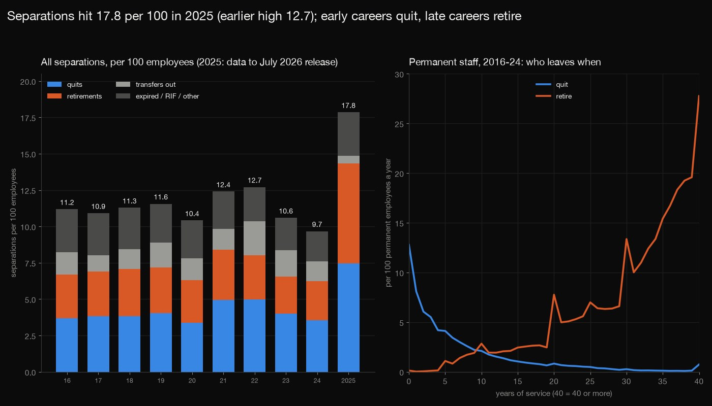
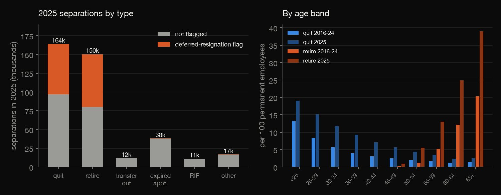
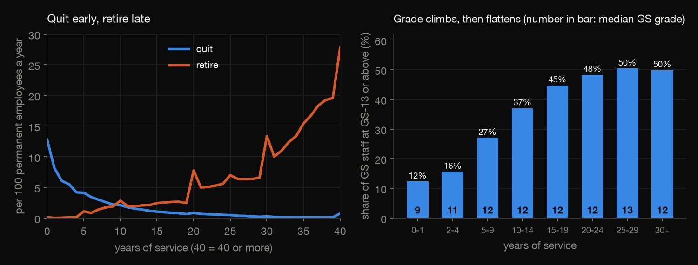
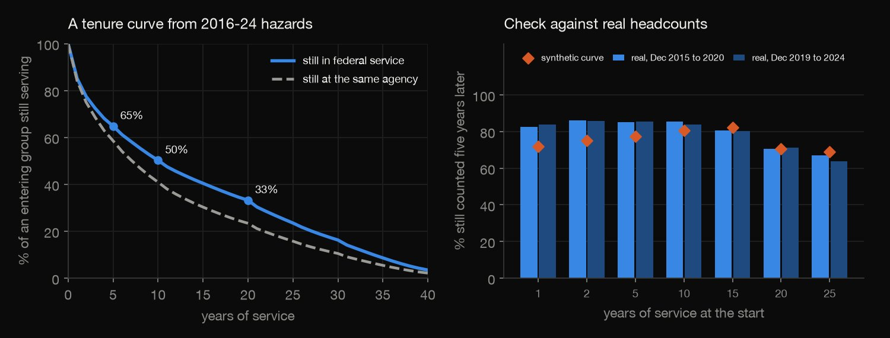
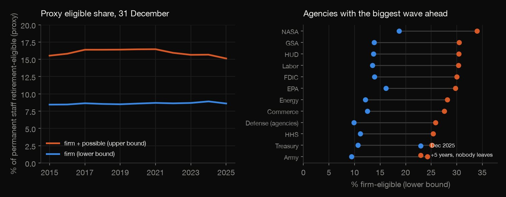
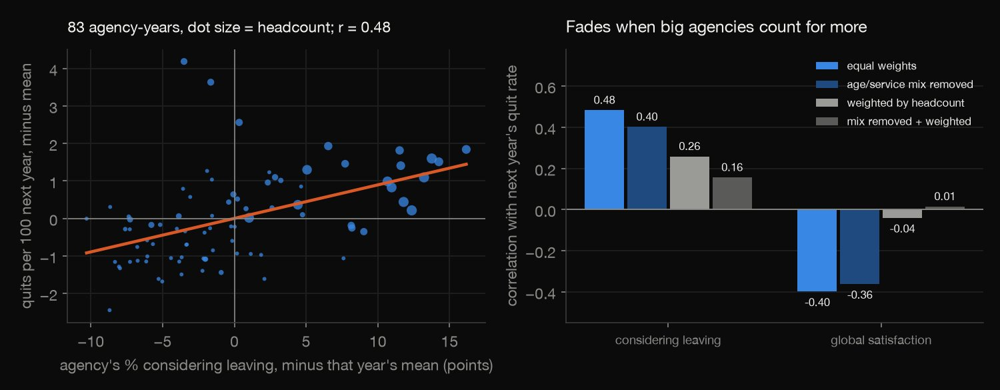

Python · People analytics · 2026-10
Who Leaves the Federal Workforce, and When?
US federal staff quit at 13 per 100 in their first year and retire at 28 per 100 after 40; separations hit 17.8 per 100 in 2025 (earlier high 12.7). Agencies whose staff say they might leave lose more to quits next year (r 0.48), but only r 0.26 weighted by size.

Aggregates only; OPM's files are record-level without names and none is published. No cause is claimed: the survey link is across agencies, 83 agency-waves, nothing ties a survey answer to a person who left. 'Involuntary' cannot be separated (OPM withholds removals), service years include military credit, eligibility is a proxy from 5-year age bands, pay is 47% redacted, the 2024 survey file is 87% NUL bytes, 2025 is a lower bound. Sources: OPM Federal Workforce Data (data.opm.gov) and Federal Employee Viewpoint Survey public data files; US government works, no terms of use stated.
01 — The problem
HR teams track who leaves and ask whether engagement predicts it. Who leaves a large employer, and when, and can a satisfaction survey see it coming?
The task follows GeeksforGeeks' "HR Analytics to Track Employee Performance". The usual teaching file for it, IBM's HR attrition data, is synthetic; this uses the US Office of Personnel Management's real federal workforce files (every separation since 2016, December headcounts) and the Federal Employee Viewpoint Survey public data files, with everything aggregated.
02 — What I built
One workforce, looked at five ways:
- Separations: quits, retirements, transfers, expired appointments and layoffs by age, years of service, occupation and agency, 2016 to 2025.
- Tenure: a synthetic-cohort curve checked against real cohorts, and grade progression by service.
- Retirement waves: an eligibility proxy by agency and its five-year ageing.
- The survey link: intent to leave and satisfaction against next year's quits, with year effects, a size-weighted version, leave-one-agency-out and a bootstrap.
- Check:
check.pyrecounts all 16,968 numbers in plain Python from 142 downloaded files, with no data or statistics library (a parquet reader excepted).
03 — How it was built
- 01
Download the files from OPM
The separations of every month since 2016, the headcount on each 31 December from 2015 and four survey files: 142 files, 936 MB, fetched through OPM's open API (no login) and never committed, with their checksums.
rows = json.loads(get(f"{API}/{kind}?current=true")) - 02
Audit before counting
4.8% of separation records are filed in a later monthly file than they happened, so each is counted in the year of its effective date; 47% of pay is redacted; and the 2024 survey file turns out to be mostly NUL bytes, with 87,320 readable respondents.
A("separation_records_in_later_file_than_effective_month_pct", 100 * byfile[byfile.late == 1].n.sum() / byfile.n.sum()) - 03
Turn exits into rates
A rate is separations over the mean of the two year-end headcounts of the same group, per 100, for permanent staff. Per year of service the exit probability is 1 - exp(-rate), chained into a synthetic cohort curve.
sf.append(sf[-1] * (1 - h.p_fed[i])) - 04
Join the survey to next year's quits
Each agency's weighted share considering leaving and its global-satisfaction index (survey waves 2021 to 2023) are joined to the agency's quit rate the next calendar year, and regressed with year fixed effects, then weighted by headcount, then without each agency in turn.
sl, r = within(prow, xk, yk, weighted=spec.endswith("wls"), fe_=spec != "pooled") - 05
Recount it all without the libraries
check.pyre-reads the 23.6 million headcount rows, the 2.7 million separations and the four survey files with loops and dictionaries (pyarrow only opens the parquet files) and recomputes every table, regression and bootstrap draw: 16,968 numbers to a relative tolerance of 1e-8. It caught three bugs in the first analysis: a missing service year silently coded as 40, a pay-redaction share with the wrong denominator and an occupation group with exits but no headcount.rng = random.Random(seed)
04 — Results
2025 broke the series. OPM's files give 391,433 separations in 2025, 17.8 per 100 employees against 9.7 to 12.7 in 2016 to 2024: 163,937 quits, 150,433 retirements and 10,757 layoffs (no earlier year above 252). 138,174 (35%) carry OPM's deferred-resignation flag, 67,136 of them coded as quits and 70,473 as retirements, and the December headcount fell from 2,312,301 to 2,074,649. This is as of the September 2026 release, and some Department of War submissions were still outstanding, so it is a lower bound. The yearly table counts every employee; the later tables use permanent staff.
| Year | Quits | Retire | All |
|---|---|---|---|
| 2016 | 3.7 | 3.0 | 11.2 |
| 2017 | 3.8 | 3.1 | 10.9 |
| 2018 | 3.8 | 3.2 | 11.3 |
| 2019 | 4.0 | 3.1 | 11.6 |
| 2020 | 3.4 | 2.9 | 10.4 |
| 2021 | 5.0 | 3.5 | 12.4 |
| 2022 | 5.0 | 3.1 | 12.7 |
| 2023 | 4.0 | 2.6 | 10.6 |
| 2024 | 3.5 | 2.7 | 9.7 |
| 2025 | 7.5 | 6.9 | 17.8 |

Quit early, retire late. For permanent staff in 2016 to 2024, the quit rate is 12.8 per 100 in the first year of service, 8.1 in the second, 2.1 in the tenth and under 1 after the fifteenth; retirements run 2.8 at ten years, 7.8 at twenty, 13.4 at thirty and 27.8 at forty or more. Quit and Retire are per 100 a year; Still in is a synthetic cohort, the share of an entering group still serving if every year of service had the 2016 to 2024 exit rate.
| Years | Quit | Retire | Still in |
|---|---|---|---|
| 0 | 12.8 | 0.1 | 100% |
| 1 | 8.1 | 0.0 | 85% |
| 2 | 6.1 | 0.1 | 77% |
| 5 | 4.1 | 1.1 | 65% |
| 10 | 2.1 | 2.8 | 50% |
| 20 | 0.8 | 7.8 | 33% |
| 30 | 0.3 | 13.4 | 16% |
| 40+ | 0.7 | 27.8 | 3% |

A tenure curve that must be checked. By that curve 65% of an entering group are still in federal service after 5 years, 50% after 10 and 33% after 20 (41% after 10 if a transfer to another agency counts as leaving). The real headcounts of the same service-year cohorts five years later do not match it for the young: 83% and 84% of the staff with one year of service were still counted five years on, against 72% from the curve, and the gap closes by 15 years. The likely cause is that service years are not hire dates (they include credited military service and rehires), so a real cohort gains people who enter it with credit. The curve is a first guess, not a validated one.

Occupations. Of the 34 occupation groups with at least 5,000 permanent staff, the highest and lowest quit rates are below; the medical, dental and public-health group, the largest at 300k, quits at 4.7. Staff and rates are annual averages for 2016 to 2024.
| Occupation group | Staff | Quit | Retire |
|---|---|---|---|
| General services | 14k | 8.8 | 3.5 |
| Food service | 11k | 7.0 | 3.4 |
| Vessel jobs | 6k | 6.1 | 3.0 |
| Warehousing | 15k | 5.1 | 3.4 |
| Physical sciences | 29k | 1.6 | 3.5 |
| Quality assurance | 11k | 1.6 | 4.0 |
| Equipment, facilities | 16k | 1.4 | 4.2 |
The retirement wave is local. By a proxy from age bands and years of service, 8.6% of permanent staff were firmly retirement-eligible on 31 December 2025 and up to 15.1%, and the firm share barely moved from 8.4% in 2015. The eligible retire at 20.0 per 100 a year against 0.6 for the rest, and across 30 agencies the 2019 eligible share correlates 0.57 with the next five years' retirement rate. If nobody left and nobody joined, the eligible share would reach 12% to 34% by agency in five years. Justice and Homeland Security look young because law-enforcement rules (50 with 20 years) are not modelled. The table gives the permanent staff, the firm eligible share now and the share in five years.
| Agency | Staff | Now | In 5 y |
|---|---|---|---|
| NASA | 15k | 19% | 34% |
| GSA | 10k | 14% | 30% |
| Labor | 12k | 14% | 30% |
| EPA | 14k | 16% | 30% |
| Defense agencies | 137k | 10% | 26% |
| Veterans Affairs | 440k | 8% | 22% |
| Army | 184k | 9% | 24% |
| Navy | 203k | 8% | 21% |
| Homeland Security | 204k | 6% | 16% |
| Justice | 105k | 4% | 12% |

Grade rises, then plateaus. Among GS employees the share at GS-13 or above is 12% in the first two years of service, 27% at 5 to 9 years and 50% at 25 to 29; the median grade is GS-9, then GS-12 from year 5 on (GS-13 only at 25 to 29). The December 2015 cohort with 0 to 1 years of service had median GS-7 and 9% at GS-13+; the staff with 10 to 11 years in 2025, 88,312 against 156,770, had GS-12 and 34%. That compares service-year cohorts, survivors plus newcomers, not the same people. Grade is complete; pay is not (47% of records are redacted), so the table leads with grade (GS staff, share at GS-13 or above, median grade).
| Years | Staff | GS-13+ | Median |
|---|---|---|---|
| 0-1 | 113k | 12% | GS-9 |
| 2-4 | 235k | 16% | GS-11 |
| 5-9 | 275k | 27% | GS-12 |
| 10-14 | 191k | 37% | GS-12 |
| 15-19 | 232k | 45% | GS-12 |
| 20-24 | 131k | 48% | GS-12 |
| 25-29 | 62k | 50% | GS-13 |
| 30+ | 79k | 50% | GS-12 |
Considering leaving is not leaving. In the survey 38%, 38% and 37% of respondents in 2021 to 2023 were considering leaving within a year (21% of them for another federal job in 2023, 5% for one outside government). Among respondents positive on none of the four global-satisfaction items 72% were, on all four 18%. But by length of service the share is flat while the quit rate falls tenfold and retirements take over, so the question measures a mood, not a hazard. In the table, Leaving? is the share considering leaving, Quit and Retire are the real rates per 100 a year (2022 to 2024).
| Service | Leaving? | Quit | Retire |
|---|---|---|---|
| Under 10 y | 38% | 6.0 | 0.4 |
| 10-19 y | 37% | 1.4 | 2.3 |
| 20+ y | 38% | 0.5 | 9.7 |
Across agencies: real, but fragile. Joining each agency's survey result to its quit rate the next calendar year gives 83 agency-waves from 29 agencies (2021 to 2023 waves, so before 2025). A point more of staff considering leaving goes with 0.089 more quits per 100 (r = 0.48; agency-cluster bootstrap 95% interval 0.048 to 0.129). Leaving out any one agency keeps the slope between 0.082 and 0.098, and removing each agency's age and service mix keeps 0.058 (interval 0.022 to 0.095). But weighting agencies by headcount cuts it to r = 0.26 and wipes out the satisfaction index (r from -0.40 to -0.04): the pattern lives in small and mid-size agencies, and no single agency drives it. The share planning to leave for a job outside government has r = 0.08. All 38 items were examined: 37 correlate negatively with quits, the strongest being pay satisfaction (r = -0.51), and 32 pass |r| = 0.21, so no item is special: they all move together. The table is the correlation of the share considering leaving (Leave) and of satisfaction (Satisf.) with next year's quit rate; Mix removed takes out each agency's age and service mix, By headcount weights the large agencies up, Both does both.
| Link to quits | Leave | Satisf. |
|---|---|---|
| Equal weights | r 0.48 | r -0.40 |
| Mix removed | r 0.40 | r -0.36 |
| By headcount | r 0.26 | r -0.04 |
| Both | r 0.16 | r 0.01 |

05 — What I'd do next
- Add the accessions files (hires) to follow hiring against exits, by agency, through 2025 and 2026.
- Replace the age-band proxy with exact retirement eligibility, which needs birth dates OPM does not release; the nearest option is the minimum-retirement-age tables by birth year.
- Wait for the survey files of 2025 and later, once OPM re-issues a readable 2024 file, to test the link on the years after the 2025 shock.